The generalized cofactor operation, denoted by gcf here
and also known as constrain in the literature, uses sibling
substitution to reduce BDD size. However, unlike Prune,
it can produce BDDs far larger than the original. Given
two functions,  and
and  , the function
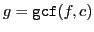 is such that
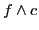 is the same as . In the process,
, the function
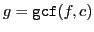 is such that
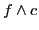 is the same as . In the process,  may be
somehow reduced compared to
may be
somehow reduced compared to  as is the case for Prune.
Unlike Prune, the following is true as well:
as is the case for Prune.
Unlike Prune, the following is true as well:
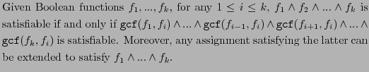
This means that, for the purposes of a solver, generalized
cofactoring can be used to eliminate one of the BDDs among a given
conjoined set of BDDs: the solver finds an assignment satisfying
 and then extends the
assignment to satisfy
and then extends the
assignment to satisfy  , otherwise the solver reports that the
instance has no solution. However, unlike Prune, generalized
cofactoring cannot by itself reduce the number of variables in a given
collection of BDDs. Other properties of the gcf operation are:
, otherwise the solver reports that the
instance has no solution. However, unlike Prune, generalized
cofactoring cannot by itself reduce the number of variables in a given
collection of BDDs. Other properties of the gcf operation are:
Care must be taken when cofactoring in ``both'' directions (exchanging
 for
for  ). For example,
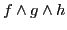 cannot be replaced
by
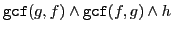 since the former may
be unsatisfiable when the latter is satisfiable.
). For example,
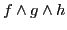 cannot be replaced
by
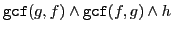 since the former may
be unsatisfiable when the latter is satisfiable.
The pseudo C++ description of gcf is as follows:
BDD gcf (BDD f, BDD c) {
if (f == F || c == F) return F;
if (c == T || f == T) return f;
let
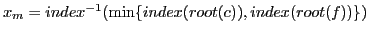;
// 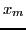 is the top variable of f and c
if (Reduce (, c) == F) return
gcf(Reduce
(, c) == F) return
gcf(Reduce (, f), Reduce
(, f), Reduce (, c));
(, c));
if (Reduce (, c) == F) return
gcf(Reduce
(, c) == F) return
gcf(Reduce (
( , f), Reduce
, f), Reduce (
( , c));
, c));
let  = gcf(Reduce
= gcf(Reduce (, f),
Reduce
(, f),
Reduce (, c));
(, c));
let  = gcf(Reduce
= gcf(Reduce (, f),
Reduce
(, f),
Reduce (, c));
(, c));
if ( ==
==  ) return
) return  ;
;
return find_or_add_node(,  ,
,  );
);
}
| 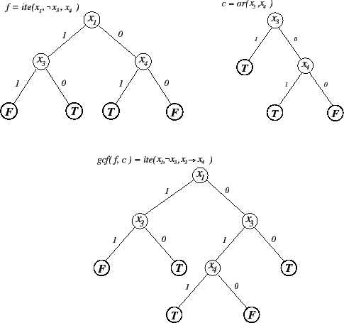 |
Figure 21 presents an example of its use
illustrating the possibility of increasing BDD size.
Figure 22 presents the same example after
swapping  and
and  under the same variable ordering and shows
that result produced by gcf is sensitive to variable ordering.
Observe that the functions produced by gcf in both Figures have
different values under the assignment 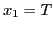, 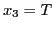, and 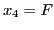. Thus, the function returned by gcf depends on the variable
ordering as well.
under the same variable ordering and shows
that result produced by gcf is sensitive to variable ordering.
Observe that the functions produced by gcf in both Figures have
different values under the assignment 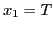, 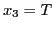, and 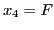. Thus, the function returned by gcf depends on the variable
ordering as well.
| 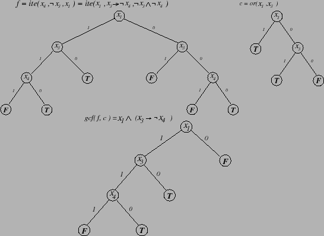 |